import torch
import torchvision
import torchvision.datasets as datasets
import torchvision.transforms as transforms
from torch.utils.data import DataLoader
# Some functions we'll need later
import modules.functions as functionsGender Classification using PyTorch
Gender Classification
Neural Networks
Python
PyTorch
Classification of faces into genders using a convolutional neural network with residual layers.
Introduction
Neural networks are cool, they can take complex tasks that are usually pretty easy for humans to do and automate them, given you have sufficient training data and computing power. In this project, we will explore how to make our own neural network, and attempt to predict the gender of faces.
To get a basic understanding of how neural networks, I would recommend watching 3Blue1Brown’s YouTube playlist on neural networks. As neural networks are slightly more complicated than most common machine learning algorithms, I won’t go through the basics in much detail here.
Objective
For this project, we’ll aim to successfully classify the following images of Freya, Kratos, and me using a neural network model.
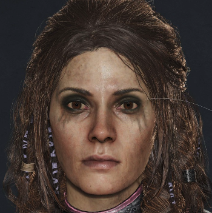
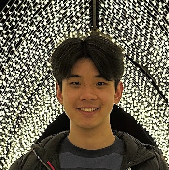
We’ll achieve this using publicly available training and testing datasets. But first, we need to load these images as a data type that can be inputted into a PyTorch neural network, a torch tensor. We can do this using a couple of modules from torchvision.
We can then use our imported modules to create Dataset and DataLoader objects. The Dataset represents our image data, after applying a transformation which resizes our images to 128 by 128 pixels, converts to grayscale (this saves us some computational power, hopefully colour isn’t an important feature), and then converts the image to a tensor. The DataLoader object then creates an iterable object using our Dataset, which is useful for accessing our data in batches, this will help us later when we train our model.
# Set device for GPU acceleration, if available.
device = functions.set_device()
loader = transforms.Compose([
transforms.Resize([128, 128]),
transforms.Grayscale(1),
transforms.ToTensor()
])
my_dataset = datasets.ImageFolder(
root='test_images/',
transform=loader
)
my_dataset_loader = DataLoader(
my_dataset,
batch_size=len(my_dataset),
generator=torch.Generator(device=device)
)Let’s set images and labels as the image and label tensors in the first and only batch in our DataLoader.
data = iter(my_dataset_loader)
images, labels = next(data)We can then display the image tensors using a simple function that uses matplotlib.pyplot under the hood.
functions.imshow(torchvision.utils.make_grid(images))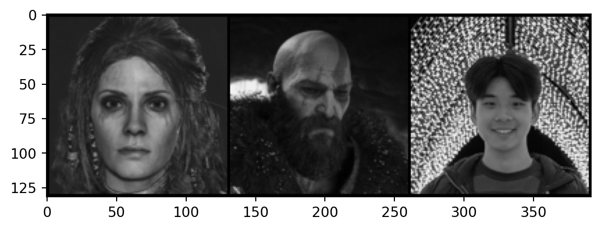
Datasets
As with any supervised machine learning algorithm, neural networks require a training and testing dataset for the model to learn and evaluate out of sample performance. In this section we’ll explore what this looks like for a neural network.
Training
For this project, we’ll require a dataset containing a large number of labelled images of faces, which as you can imagine isn’t all that common. Luckily for us, the CelebA is a publicly available labelled dataset of around 200k faces. As it’s a well known dataset, there is a function in torch that automatically downloads the required files (sometimes, usually the Google drive link is down) and creates a dataset object for the CelebA.
imsize = int(128/0.8)
batch_size = 10
classes = ('Female', 'Male')
fivecrop_transform = transforms.Compose([
transforms.Resize([imsize, imsize]),
transforms.Grayscale(1),
transforms.FiveCrop(int(imsize*0.8)),
transforms.Lambda(lambda crops: torch.stack([transforms.ToTensor()(crop) for crop in crops]))
])
train_dataset = datasets.CelebA(
root = './',
split='all',
target_type='attr',
transform=fivecrop_transform,
download=True
)
train_loader = DataLoader(
train_dataset,
batch_size=batch_size,
shuffle=True,
generator=torch.Generator(device=device)
)We can verify the number of training images using len.
len(train_dataset)202599Note that the set of transformations applied to the training dataset contains FiveCrop in addition to the standard resize and grayscale transformations, FiveCrop makes 5 cropped versions of each image (who would have guessed), one for each corner plus centered. This improves model performance and reduces overfitting to the training dataset. However, this also increases the computational resources required to train the model on this dataset by a factor of 5.
Note
There is also a TenCrop function which applies the transformations from FiveCrop, plus a vertical flip. I would have liked to use TenCrop, but my old MacBook did not agree with that decision.
We can then access a few sample training images and their labels as we did previously.
train_data = iter(train_loader)
train_images, train_labels = next(train_data)
# Index of Male label, as CelebA contains multiple labels.
factor = functions.attributes.index('Male')
functions.imshow(torchvision.utils.make_grid(
torch.cat((
train_images[0],
train_images[1],
train_images[2]
)),
nrow=5
))
for i in range(3):
print(classes[train_labels[:, factor][i]])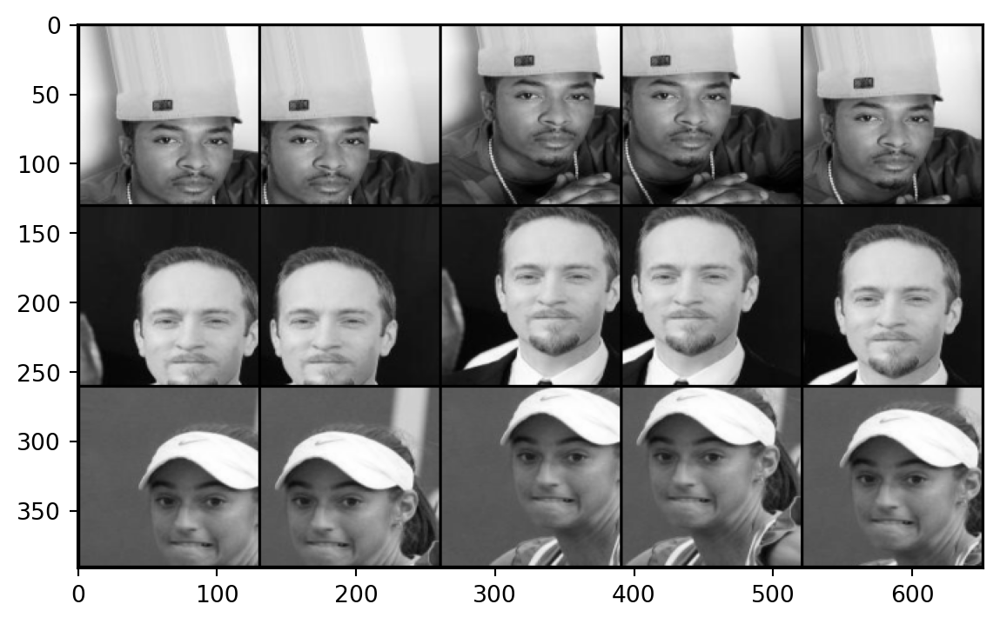
Male
Male
FemaleTesting
Next, we need a dataset to test the performance of our model on unseen data. The simple option would be to split CelebA into train and test partitions. However, I found achieving high test accuracy under this setup to be fairly simple, and resulted in poor performance on other image datasets.
Thus, we’ll use a Kaggle dataset of AI generated faces as the test dataset, which I found required a significantly more complicated model to achieve high accuracy in, but produced models with better performance when given a random selection of my own images.
test_transform = transforms.Compose([
transforms.Resize([int(imsize*0.8), int(imsize*0.8)]),
transforms.Grayscale(1),
transforms.ToTensor()
])
test_dataset = datasets.ImageFolder(
root='ThisPersonDoesNotExist_resize/',
transform=test_transform
)
test_loader = DataLoader(
test_dataset,
batch_size=batch_size,
shuffle=True,
generator=torch.Generator(device=device)
)Once again, we can get the number of images in the test dataset.
len(test_dataset)6873
Note
This dataset was originally the training dataset, given significantly reduced number of images compared to CelebA, it’s unsurprising the initial models did not perform well.
We can then show a few images from the test dataset, along with their labels.
test_data = iter(test_loader)
test_images, test_labels = next(test_data)
functions.imshow(torchvision.utils.make_grid(test_images, nrow=5))
for i in range(batch_size):
print(classes[test_labels[i]])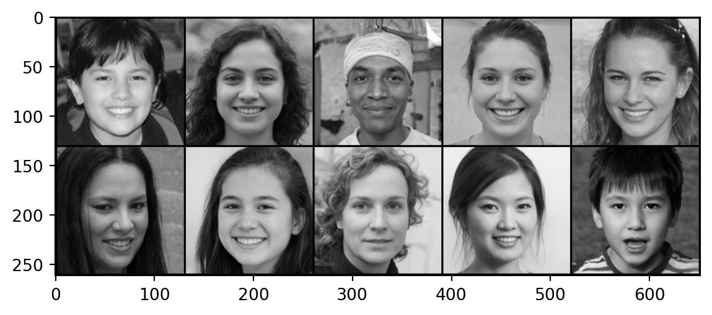
Female
Female
Male
Female
Female
Female
Female
Female
Female
MaleModel Architecture
Next, we’ll need to determine the architecture, or combination of layers and activation functions, that our neural network will use. I’ll skip the experimentation and failed models part of this project but I found that a scaled up version of the model used in this repository by CallenL worked the best (of the models I tried). This model seemed to perform better due to a combination of having residual layers (enabling back propogation to work better) and more convolution layers (allowing more features to be detected).
import torch.nn as nn
import torch.nn.functional as F
# Define recurring sequence of convolution, batch normalisation, and rectified linear activation function layers.
def conv_block(in_channels, out_channels, pool=False):
layers = [
nn.Conv2d(
in_channels,
out_channels,
kernel_size=3,
padding=1
),
nn.BatchNorm2d(out_channels),
nn.ReLU()
]
if pool:
layers.append(
nn.MaxPool2d(4)
)
return nn.Sequential(*layers)
class resnetModel_128(nn.Module):
def __init__(self):
super().__init__()
# Define convolution and residual layers based on conv_block function.
self.conv_1 = conv_block(1, 64)
self.res_1 = nn.Sequential(
conv_block(64, 64),
conv_block(64, 64)
)
self.conv_2 = conv_block(64, 256, pool=True)
self.res_2 = nn.Sequential(
conv_block(256, 256),
conv_block(256, 256)
)
self.conv_3 = conv_block(256, 512, pool=True)
self.res_3 = nn.Sequential(
conv_block(512, 512),
conv_block(512, 512)
)
self.conv_4 = conv_block(512, 1024, pool=True)
self.res_4 = nn.Sequential(
conv_block(1024, 1024),
conv_block(1024, 1024)
)
# Define classifier function using fully connected, dropout, and rectified linear activation function.
self.classifier = nn.Sequential(
nn.Flatten(),
nn.Linear(2*2*1024, 2048),
nn.Dropout(0.5),
nn.ReLU(),
nn.Linear(2048, 1024),
nn.Dropout(0.5),
nn.ReLU(),
nn.Linear(1024, 2)
)
# Define forward function using functions initialised earlier, which outputs predictions.
def forward(self, x):
x = self.conv_1(x)
x = self.res_1(x) + x
x = self.conv_2(x)
x = self.res_2(x) + x
x = self.conv_3(x)
x = self.res_3(x) + x
x = self.conv_4(x)
x = self.res_4(x) + x
x = self.classifier(x)
x = F.softmax(x, dim=1)
return xWe can now create a variable using our neural network class.
# Set seed for reproducibility.
torch.manual_seed(2687)
resnet = resnetModel_128()Now is also a good time to check how many parameters (individual weights and biases) our model contains.
total_params, trainable_params = functions.n_parameters(resnet)
print(f'Total Parameters: {total_params}')
print(f'Trainable Parameters: {trainable_params}')Total Parameters: 41400194
Trainable Parameters: 41400194The variable resnet is our model initialised with completely random parameters. For fun, let’s make a prediction based on the untrained model.
resnet.eval()
with torch.no_grad():
output = resnet.forward(images.to(device))
predicted = torch.max(output.data, 1)[1]
for i in range(len(predicted)):
print(f'Image: {my_dataset.imgs[i][0]}')
print(f'Prediction: {classes[predicted[i]]}')
print(f'Actual: {classes[labels[i]]}')
print(f'{classes[0]} weight: {output[i][0]}')
print(f'{classes[1]} weight: {output[i][1]}\n')Image: test_images/Female/freya.png
Prediction: Female
Actual: Female
Female weight: 0.5020168423652649
Male weight: 0.4979831576347351
Image: test_images/Male/kratos.png
Prediction: Female
Actual: Male
Female weight: 0.5018221139907837
Male weight: 0.4981779158115387
Image: test_images/Male/me.png
Prediction: Female
Actual: Male
Female weight: 0.5015270113945007
Male weight: 0.49847298860549927
As expected, the weights are about 50-50 which indicates the model isn’t doing much predicting.
Training
So, how to we change the parameters of the model such that it generates more accurate outputs? Basically, by doing an interative process known as backpropagation, which incrementally changes the model parameters based on the partial derivatives of the parameters with respect to the loss function, which minimises error and thus makes the model more accurate. This YouTube video by Artem Kirsanov provides a more detailed explanation of backpropagation.
In the code below, criterion specifies the loss function and optimizer specifies the optimisation algorithm used, which in this case is stochastic gradient descent. The additional optional variable scheduler specifies how the learning rate changes. Here I have used torch.optim.lr_scheduler.StepLR to multiply the learning rate by 0.1 after every step, with step being defined as an epoch in the training loop.
resnet.train()
criterion = nn.CrossEntropyLoss()
optimizer = torch.optim.SGD(
resnet.parameters(),
lr=0.01,
momentum=0.9,
weight_decay=0.001
)
scheduler = torch.optim.lr_scheduler.StepLR(
optimizer=optimizer,
step_size=1,
gamma=0.1
)Now we can train our model. For each batch in our training data, we need to:
- Resize the input tensors such that
resnet.forwardcan take all cropped image tensors as inputs. - Average the outputs of each group of cropped image tensors, so each distinct image only gets one final prediction.
- Calculate loss based on predicted and actual labels.
- Update parameters using backpropagation.
- Record loss and accuracy.
Note
Steps 1 and 2 would be unnecessary if we didn’t use FiveCrop.
When we have completed this loop for the entire training dataset, we then make predictions on the entire test dataset via its batches and record the loss and accuracy for each batch.
This entire process is called an epoch, and we specify how many epochs to train for. I chose 2 epochs for this model due to time constraints (this exact training setup took 20 hours on my 2020 MacBook Pro), and because it resulted in satisfactory performance anyway.
epochs = 2
train_losses = []
test_losses = []
train_accuracy = []
test_accuracy = []
for i in range(epochs):
epoch_time = 0
for j, (X_train, y_train) in enumerate(train_loader):
X_train = X_train.to(device)
y_train = y_train[:, factor]
# Input all crops as separate images.
bs, ncrops, c, h, w = X_train.size()
y_pred_crops = resnet.forward(X_train.view(-1, c, h, w))
# Let image prediction be the mean of crop predictions.
y_pred = y_pred_crops.view(bs, ncrops, -1).mean(1)
loss = criterion(y_pred, y_train)
predicted = torch.max(y_pred.data, 1)[1]
train_batch_accuracy = (predicted == y_train).sum()/len(X_train)
optimizer.zero_grad()
loss.backward()
optimizer.step()
train_losses.append(loss.item())
train_accuracy.append(train_batch_accuracy.item())
print(f'\nEpoch: {i+1}/{epochs} | Train Batch: {j+1}/{len(train_loader)}')
print(f'Train Loss: {loss}')
print(f'Train Accuracy: {train_batch_accuracy}')
break
with torch.no_grad():
for j, (X_test, y_test) in enumerate(test_loader):
X_test = X_test.to(device)
y_val = resnet.forward(X_test)
loss = criterion(y_val, y_test)
predicted = torch.max(y_val.data, 1)[1]
test_batch_accuracy = (predicted == y_test).sum()/len(X_test)
test_losses.append(loss.item())
test_accuracy.append(test_batch_accuracy.item())
print(f'\nEpoch: {i+1}/{epochs} | Test Batch: {j+1}/{len(test_loader)}')
print(f'Test Loss: {loss}')
print(f'Test Accuracy: {test_batch_accuracy}')
break
scheduler.step()
break
Epoch: 1/2 | Train Batch: 1/20260
Train Loss: 0.7186497449874878
Train Accuracy: 0.5
Epoch: 1/2 | Test Batch: 1/688
Test Loss: 0.746019721031189
Test Accuracy: 0.30000001192092896Since the training loop takes a significant amount of time, I’ve broken the loop to demonstrate how it works on this page. However, the loss and accuracy data produced by the training loop was conveniently saved last time the model was trained, so we’ll load it in with pandas and plot it.
import pandas as pd
train_plot_data = pd.read_csv('training_plot_data/train_data.csv')
test_plot_data = pd.read_csv('training_plot_data/test_data.csv')
train_plot_data = train_plot_data.drop(columns='Unnamed: 0')
test_plot_data = test_plot_data.drop(columns='Unnamed: 0')
train_plot_MA_data = train_plot_data.rolling(500).mean()
train_plot_MA_data.dropna(inplace=True)
test_plot_MA_data = test_plot_data.rolling(50).mean()
test_plot_MA_data.dropna(inplace=True)train_plot_MA_data.plot(
use_index=True,
title='Training Loss/Accuracy (2 Epochs)',
xlabel='Batch'
)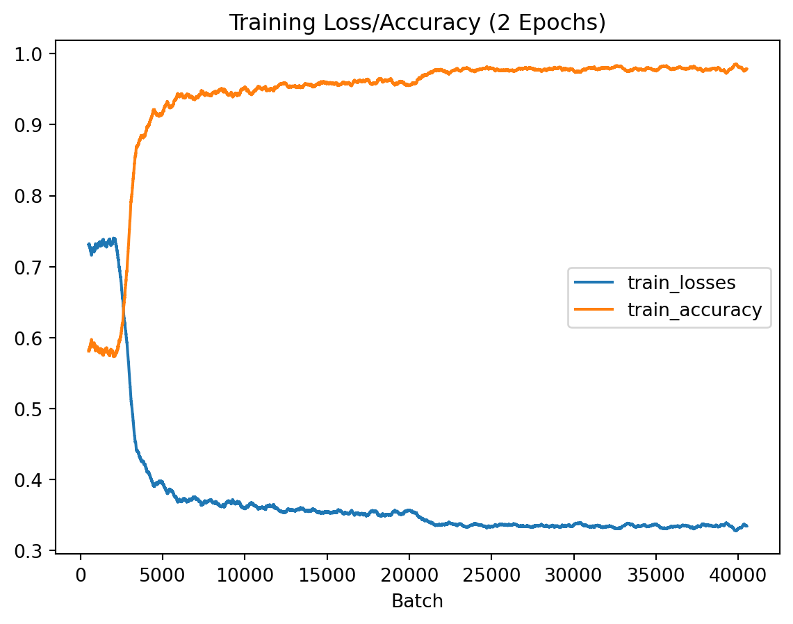
test_plot_MA_data.plot(
use_index=True,
title='Test Loss/Accuracy (2 Epochs)',
xlabel='Batch'
)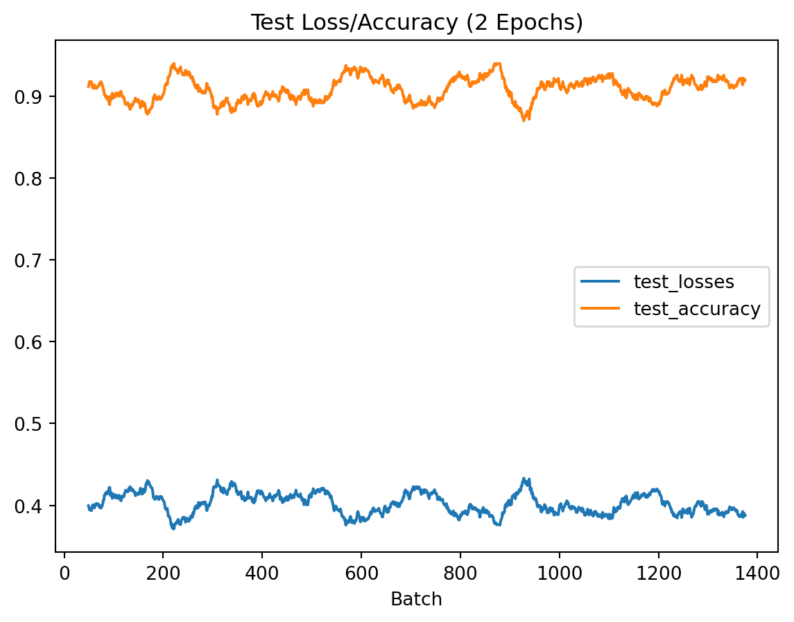
We can notice that the model converges fairly quickly, with improvements to performance plateauing after about 5000 batches. Testing performance stays relatively consistent, as it’s only evaluated after a full epoch of training is completed, and the model converges before a full epoch is complete.
Results
Going back to our original objective, we will once again attempt to classify Freya, Kratos, and me. But this time, we will use our trained model parameters, which can be loaded in using torch.load.
resnet.load_state_dict(torch.load('trained_models/resnetModel_128_epoch_2.pt', map_location=device))
resnet.eval()
with torch.no_grad():
output = resnet.forward(images.to(device))
predicted = torch.max(output.data, 1)[1]
for i in range(len(predicted)):
print(f'Image: {my_dataset.imgs[i][0]}')
print(f'Prediction: {classes[predicted[i]]}')
print(f'Actual: {classes[labels[i]]}')
print(f'{classes[0]} weight: {output[i][0]}')
print(f'{classes[1]} weight: {output[i][1]}\n')Image: test_images/Female/freya.png
Prediction: Female
Actual: Female
Female weight: 0.9999755620956421
Male weight: 2.4402881535934284e-05
Image: test_images/Male/kratos.png
Prediction: Male
Actual: Male
Female weight: 0.019050072878599167
Male weight: 0.9809499382972717
Image: test_images/Male/me.png
Prediction: Male
Actual: Male
Female weight: 0.19523011147975922
Male weight: 0.8047698736190796
Success! The neural network successfully classified all 3 images. It even picked up that Kratos has a higher likelihood of being a man compared to me, which is fairly reasonable.
To get a bit of insight into what the neural network is doing we can visualise what the happens to an image as it passes through the convolutional layers. This shows us how the convolutional layers chooses features and the weight of each feature for our chosen image.
# Choose image of Kratos.
image = images[1]
with torch.no_grad():
layer_1 = resnet.conv_1(image.to(device).unsqueeze(0))
layer_2 = resnet.res_1(layer_1) + layer_1
layer_3 = resnet.conv_2(layer_2)
layer_4 = resnet.res_2(layer_3) + layer_3
layer_5 = resnet.conv_3(layer_4)
layer_6 = resnet.res_3(layer_5) + layer_5
layer_7 = resnet.conv_4(layer_6)
layer_8 = resnet.res_4(layer_7) + layer_7functions.imshow(
torchvision.utils.make_grid(
layer_1.squeeze(0).unsqueeze(1),
nrow=int(64**0.5)
)
)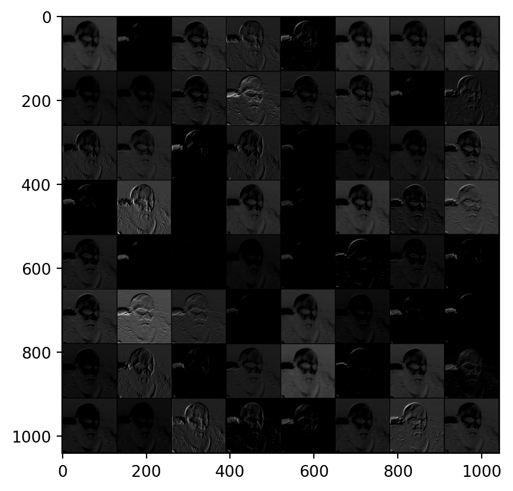
functions.imshow(
torchvision.utils.make_grid(
layer_2.squeeze(0).unsqueeze(1),
nrow=int(64**0.5)
)
)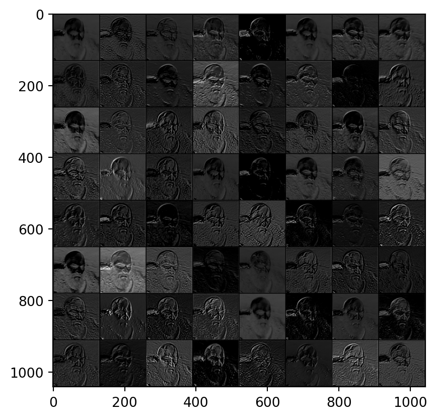
functions.imshow(
torchvision.utils.make_grid(
layer_3.squeeze(0).unsqueeze(1),
nrow=int(256**0.5)
)
)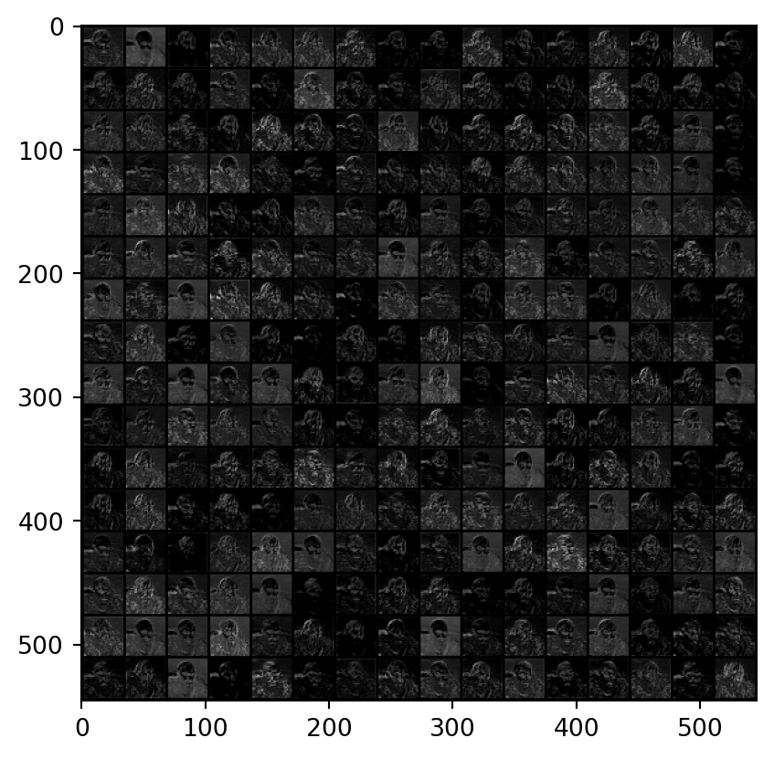
functions.imshow(
torchvision.utils.make_grid(
layer_4.squeeze(0).unsqueeze(1),
nrow=int(256**0.5)
)
)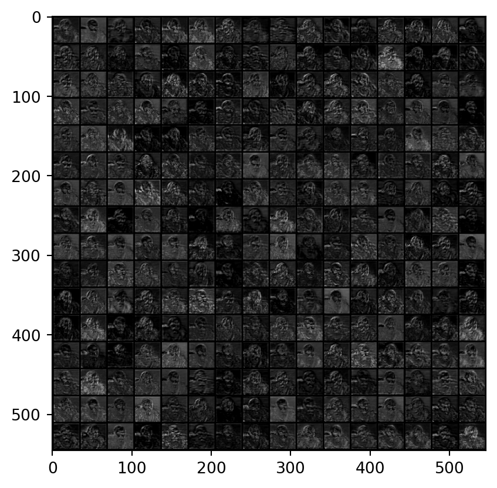
functions.imshow(
torchvision.utils.make_grid(
layer_5.squeeze(0).unsqueeze(1),
nrow=int(512**0.5)
)
)functions.imshow(
torchvision.utils.make_grid(
layer_6.squeeze(0).unsqueeze(1),
nrow=int(512**0.5)
)
)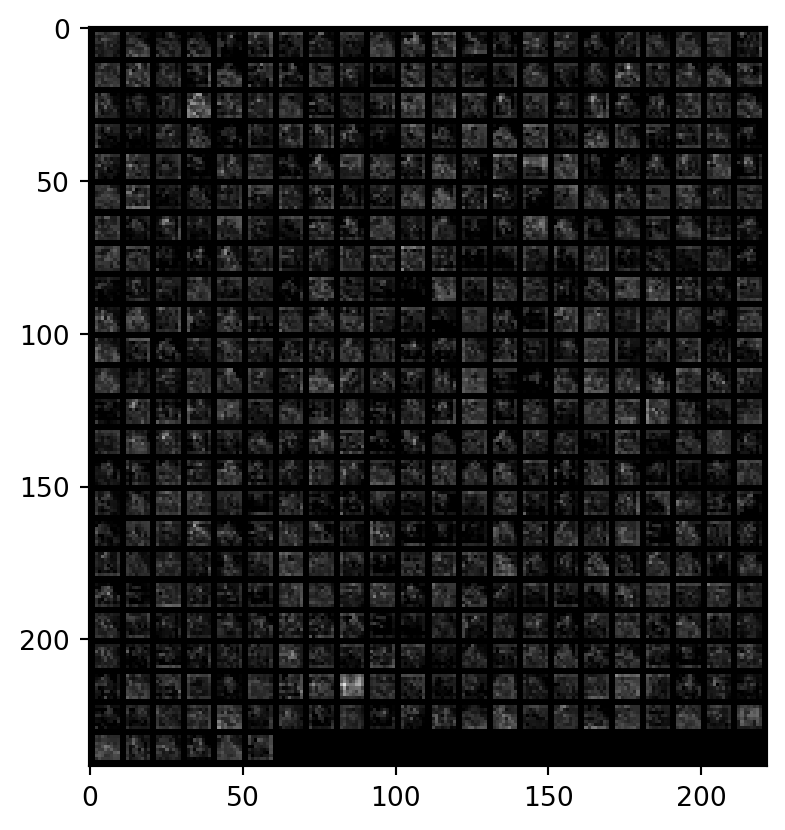
functions.imshow(
torchvision.utils.make_grid(
layer_7.squeeze(0).unsqueeze(1),
nrow=int(1024**0.5)
)
)functions.imshow(
torchvision.utils.make_grid(
layer_8.squeeze(0).unsqueeze(1),
nrow=int(1024**0.5)
)
)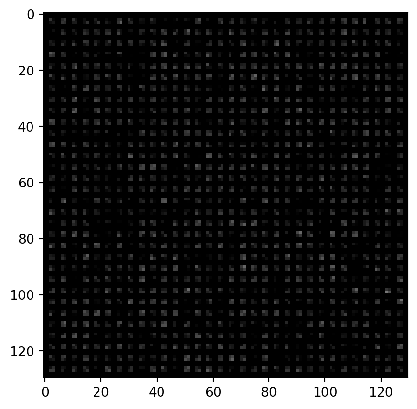
The code to train and use this model to make predictions on custom images is available in this GitHub repo.